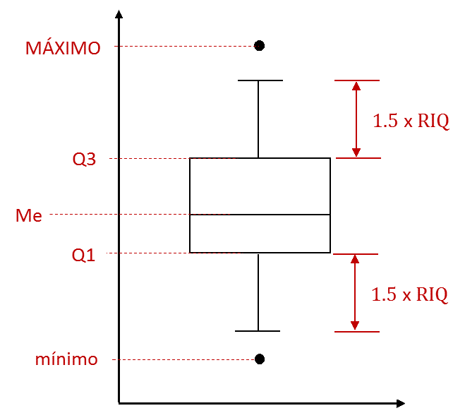
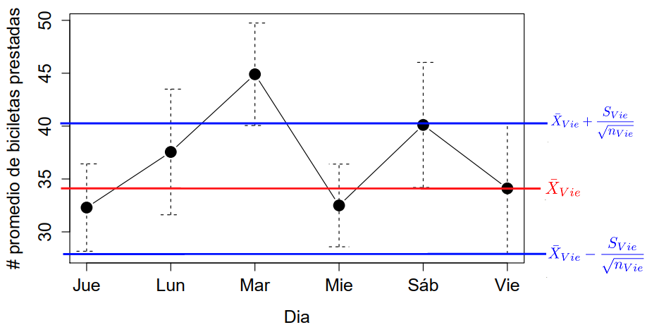

Ejemplo 1
Préstamo de bicicletas
Los siguientes son datos correspondientes al número de bicicletas prestadas durante varias semanas por una estación del sistema de bicicletas públicas. En las filas se presentan las semanas de observación (no especificada):
Vamos a tener en cuenta este ejemplo para los gráficos que vamos a aprender en esta sección.
Boxplot
Tenga en cuenta que \(Me = \tilde{X}\).

Hagamos un Boxplot sin variable de agrupación:

Boxplot con variable de agrupación
data <- data.frame(Prestamos = x,
Dia = c(rep("Lun", 9),
rep(c("Mar","Mie","Jue"), each = 10),
rep("Vie", 9), rep("Sáb", 9))
)
boxplot(Prestamos ~ Dia, data = data, ylab = "Préstamos")
Gráfico de Medias
# de Bicicletas promedio prestadas por día:
library(RcmdrMisc)
par(cex.lab = 1.3, cex.axis = 1.3)
with(data, plotMeans(Prestamos, Dia, error.bars="se", main="",
connect=TRUE, ylab = "# promedio de biciletas prestadas"))
Recuerde, el promedio señalado por el punto negro, y el error estándar señalado por las barras de error (las líneas punteadas) se calculan con los datos correspondientes a cada día. Por ejemplo, para el día viernes.

Gráfico de Barras
Permite graficar una variable numérica con una categórica.
Permite representar graficamente tablas de frecuencia de variable categórica.
Eje x: Variable categórica.
Eje y: Variable numérica (o Frecuencia).
resumen <- read.csv("frec_dia_hora.csv", header = T, row.names = "Dia")
data1 <- resumen[,-5]
data1 <- rowSums(data1)
barplot(t(data1), beside = TRUE, xlab = "Día", ylab = "# préstamos")
Nota: quitamos la columna 5 de manera arbitraria, para hacer una demostración de como eliminar columnas. Cuando hay este tipo de situaciones con valores NA, puede tener más relevancia quitar filas (recuerde el uso de na.omit).
ggplot(data = data, aes(x=Dia, y=Prestamos)) + geom_bar(stat="sum") +
theme(legend.position = "none") 
Gráfico circular
Permite representar graficamente tablas de frecuencia de variable categórica.
Color: variable categórica
Tamaño de la tajada: frecuencia.
lbls <- names(data1)
pie(data1, labels = lbls, main="Gráfico Circular")
Gráfico de Barras comparativo (2 variables)
# de Bicicletas prestadas por día:
| Sem.1 | Sem.2 | Sem.3 | Sem.4 | Sem.5 | Sem.6 | Sem.7 | Sem.8 | Sem.9 | Sem.10 | |
|---|---|---|---|---|---|---|---|---|---|---|
| Lun | 68 | 63 | 42 | 27 | 30 | 36 | 28 | 32 | 12 | |
| Mar | 65 | 43 | 25 | 74 | 38 | 51 | 36 | 42 | 28 | 47 |
| Mie | 12 | 32 | 49 | 38 | 21 | 42 | 27 | 31 | 50 | 23 |
| Jue | 22 | 43 | 27 | 49 | 16 | 28 | 23 | 19 | 46 | 49 |
| Vie | 79 | 27 | 22 | 23 | 24 | 25 | 44 | 30 | 24 | |
| Sab | 31 | 28 | 25 | 45 | 12 | 57 | 51 | 43 | 69 |
data2 <- resumen[,c("Sem.1","Sem.4","Sem.8")]
barplot(t(data2), beside = T, col = 3:5, xlab = "Día", ylab = "# préstamos")
legend("topright", legend = colnames(data2), fil = 3:5)
Histograma
Permite representar graficamente tablas de frecuencia de variable numérica.
Eje x: Variable numérica
Eje y: Frecuencia.
h <- hist(x, main='')
Observe la siguiente tabla de frecuencias. ¿Qeé relación tiene con el histograma?
library(fdth)
mi_tabla <- fdt(x = x, start = 10, end = 80, right = TRUE,
h = 10)
summary(mi_tabla)## Class limits f rf rf(%) cf cf(%)
## (10,20] 5 0.09 8.77 5 8.77
## (20,30] 20 0.35 35.09 25 43.86
## (30,40] 9 0.16 15.79 34 59.65
## (40,50] 14 0.25 24.56 48 84.21
## (50,60] 3 0.05 5.26 51 89.47
## (60,70] 4 0.07 7.02 55 96.49
## (70,80] 2 0.04 3.51 57 100.00Polígono de Frecuencias (Ojiva)
El gráfico es una serie de parejas ordendas unidas por rectas.
Eje x: Variable aleatoria.
Eje y: Frecuencia acumulada.
# library(agricolae)
ogive.freq(h, xlab='Número de préstamos', ylab='Relative frequency')
## Número de préstamos RCF
## 1 10 0.0000
## 2 20 0.0877
## 3 30 0.4386
## 4 40 0.5965
## 5 50 0.8421
## 6 60 0.8947
## 7 70 0.9649
## 8 80 1.0000
## 9 90 1.0000Diagrama de Pareto
Se compone de un diagrama de barras, al cual se le superpone un gráfico de línea (polígono de frecuencia acumulada).
Eje x: Variable categórica
Eje y izquierdo: Frecuencia absoluta acumulada.
Eje y derecho: Frecuencia relativa acumulada.
Grafiquemos uno de estos para las bicicletas
# library(qcc)
pareto.chart(data1, ylab='# de Préstamos')
##
## Pareto chart analysis for data1
## Frequency Cum.Freq. Percentage Cum.Percent.
## Mar 411.00000 411.00000 20.36670 20.36670
## Sáb 361.00000 772.00000 17.88900 38.25570
## Lun 338.00000 1110.00000 16.74926 55.00496
## Jue 306.00000 1416.00000 15.16353 70.16848
## Mie 304.00000 1720.00000 15.06442 85.23290
## Vie 298.00000 2018.00000 14.76710 100.00000